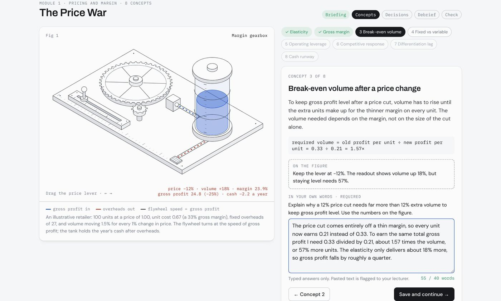
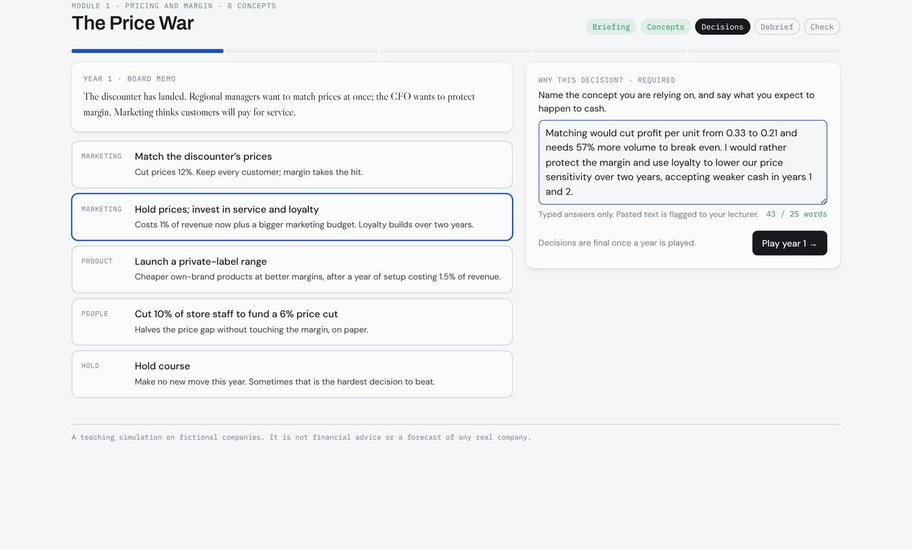
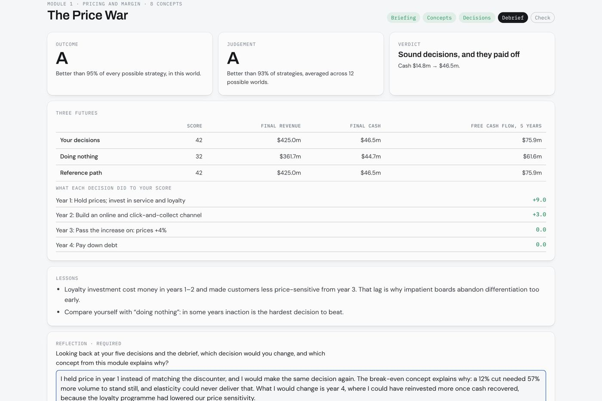
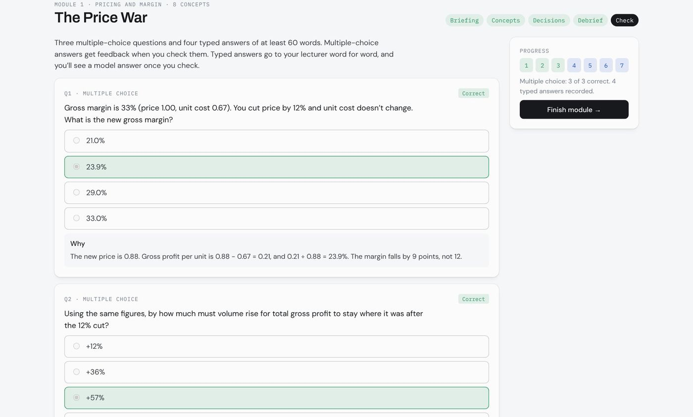
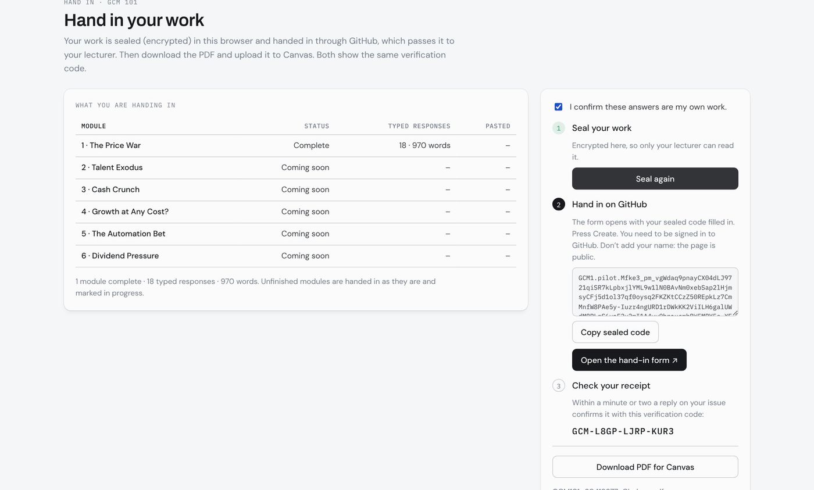
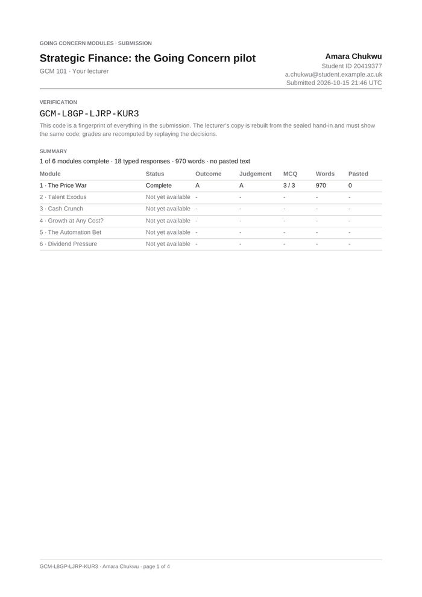
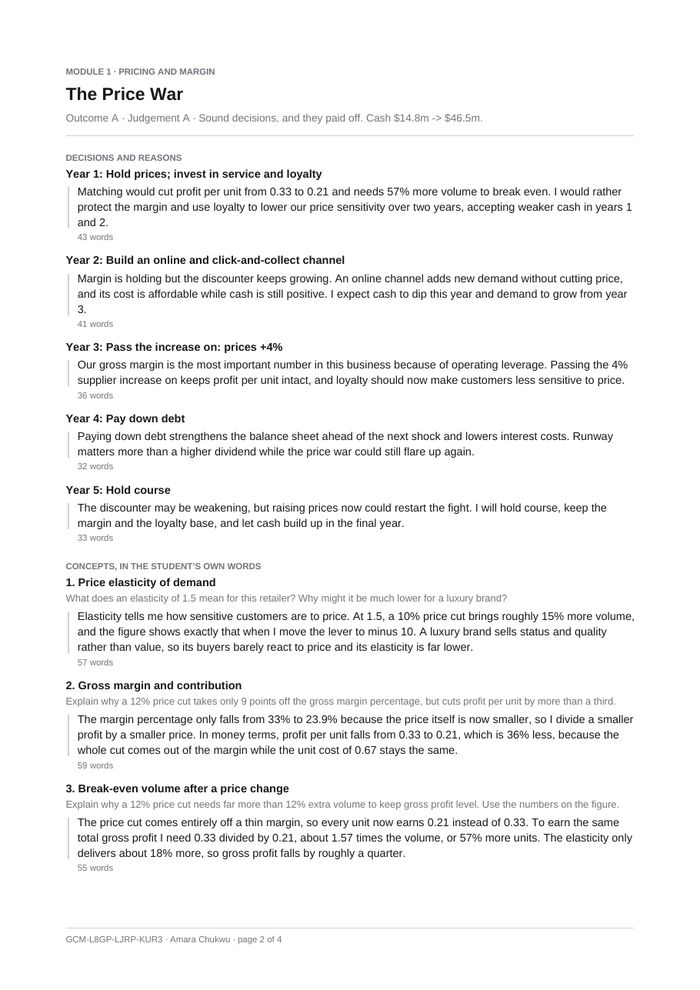
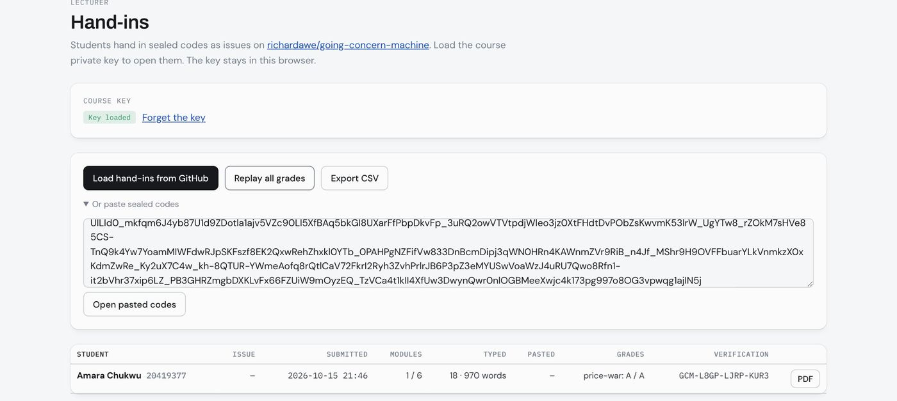

Each module puts students in charge of a fictional business through five years of decisions. They explore every concept on a working model, explain it in their own words, and hand in a PDF that drops straight into Canvas. The grades come from replaying their decisions, so a result can’t be faked.

| Module | Decision area | Concepts | |
|---|---|---|---|
| 1 · The Price War | Pricing and margin | Price elasticity · gross margin and contribution · break-even volume · fixed and variable costs · operating leverage · competitive response · differentiation and the time lag · liquidity and cash runway | Available now |
| 2 · Talent Exodus | People economics | Labour as cost and capacity · attrition and replacement cost · morale and productivity · permanent versus one-off costs · human capital investment · capacity constraints · equity versus debt funding · acquisition and integration risk | Available now |
| 3 · Cash Crunch | Liquidity | Profit versus cash · the working-capital cycle · cash conversion cycle · liquidity ratios · covenants and interest cover · short-term financing and factoring · going-concern assessment · cash triage | Available now |
| 4 · Growth at Any Cost? | Unit economics | Customer acquisition cost · churn and retention · customer lifetime value · LTV/CAC and payback · cohort analysis · the Rule of 40 · burn rate and runway · dilution | Available now |
| 5 · The Automation Bet | Capital investment | Capex versus opex · time value of money · NPV · payback and IRR · depreciation · cost structure and operating leverage · sunk costs · real options | Available now |
| 6 · Dividend Pressure | Capital allocation | Free cash flow · dividend policy and signalling · buybacks versus dividends · ROIC versus WACC · capital structure · reinvestment and growth · agency problems and activists · shareholder and stakeholder views | Available now |







All six modules are complete and can be tried today. The pilot runs entirely in the browser, with nothing to install. The full release moves to a dedicated server and domain with university sign-in.
Annual licence covering every student in the programme, with the lecturer view included. Ask us about pricing and the first-year pilot terms.